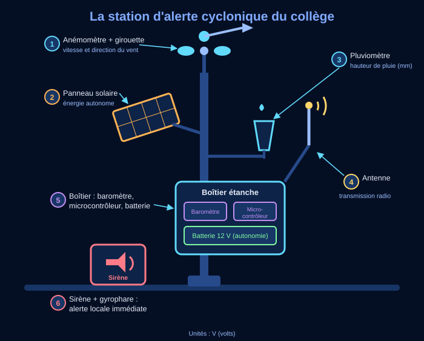

📌 Synthèse élève — La station d'alerte cyclonique : de la mesure à l'alerte
Comment une rafale de vent devient un nombre dans une machine, puis une alerte sur un téléphone.
🧠 Ce que je dois retenir
Comment la station transforme-t-elle ses mesures en données fiables, pour alerter au bon moment ?
Ce que dit le programme (3e, compétence C4) :
décrire un OST en caractérisant sa chaîne d'information ;
associer des grandeurs analogiques issues d'un OST à des données exploitables ;
représenter sous forme de données les informations de diverses natures utilisées par un OST ;
identifier, selon les cas, leur mise en forme, leur transmission ou leur stockage dans des fichiers (texte, image, nombre) afin de comprendre le fonctionnement de l'OST.

📍 L'objet : la station d'alerte du collège (dessin).
Dans la station, l'information entre par les capteurs et sort par l'antenne et la sirène :
grandeur physique➜
ACQUÉRIRAnémomètre, pluviomètre, baromètre
signal électrique➜
TRAITERMicrocontrôleur et ses seuils
donnée numérique➜
COMMUNIQUERAntenne radio, sirène, application
message➜Alerter les habitants
Une rafale à 132 km/h devient une tension, puis le nombre 132. Comme 132 dépasse 118, le seuil d'un ouragan,
la station passe en vigilance violette.
🧠 À retenir : la chaîne d'information va des capteurs à l'alerte, en
trois fonctions. À chaque étape, la nature du signal change ; l'information portée reste la même.
⚠️ Le piège : classer le panneau solaire dans ACQUÉRIR. Il capte de l'énergie, pas une
information : il appartient à la chaîne d'énergie.
Le baromètre mesure de 868 à 1 018 hPa (hectopascals). Son CAN, le convertisseur analogique-numérique,
travaille sur 10 bits :
1 024 paliers2¹⁰ = 1 024, numérotés de 0 à 1 023.
Un palier ≈ 0,15 hPaL'étendue divisée par les intervalles : 150 ÷ 1 023.
N = 512 ➜ 943 hPa868 + 512 × 0,1466 ≈ 943.
🧠 À retenir : le CAN range une tension continue dans un nombre fini de
paliers : n bits en donnent 2ⁿ. On retrouve la grandeur avec valeur = min + N × étendue ÷ (2ⁿ − 1).
⚠️ Le piège : compter 1 023 paliers, ou lire N = 1 024 au maximum. On compte depuis
0 : le plus grand N vaut 1 023.
Une ligne de la table de la station réunit les données d'un même instant. Chacune a son type :
Entierle vent : 132
Décimalla pression : 987.4
Textela commune : "Sainte-Luce"
Booléensirène déclenchée ? vrai
Date et heure2026-08-28 14:35
🧠 À retenir : une information devient une donnée typée, rangée sous un
descripteur clair, sans espace ni accent, comme vent_kmh. Une ligne est un enregistrement.
⚠️ Le piège : typer 987.4 en entier. Le type dépend de la nature de la donnée,
pas de sa valeur du moment.
5. Quel format, et que devient un fichier envoyé ?
Le système d'alerte produit plusieurs fichiers. Chacun a le format qui convient à son contenu :
Le tableau des mesures.csv, pour calculer.
La carte des vents.png, une image.
Le message sonore.mp3, compressé, donc léger.
Le message à l'application.json, bien structuré.
Les consignes à imprimer.pdf, mise en page figée.
Quand la station envoie son fichier au serveur, elle en garde l'original. Ses mesures sont donc à deux endroits.
🧠 À retenir : la mise en forme, c'est choisir le format adapté au contenu.
Transmettre, c'est copier vers un autre appareil ; stocker en deux endroits, c'est la redondance.
⚠️ Le piège : croire qu'un fichier transmis quitte la station. L'original reste : si
l'antenne casse, aucune mesure n'est perdue.
La station a enregistré 48 heures de mesures simulées, une ligne par heure. Le tableur trouve vite les extrêmes :
Rafale maximale223 km/h, avec MAX().
Pression minimale966,8 hPa (hectopascals), avec MIN().
D'orange à violetteDu 28 à 15 h au 29 à 15 h : 24 heures.
Quand le vent monte, la pression chute, de 1 012 à 967 hPa.
🧠 À retenir : une table structurée permet de calculer et de croiser deux capteurs.
Une rafale isolée, sans chute de pression, ne déclenche pas la sirène : on évite les fausses alertes.
⚠️ Le piège : écrire « la pression fait monter le vent ». Les deux varient
ensemble, mais c'est le cyclone qui cause les deux.
📖 Les mots de la séquence
OST — technical object or system
un objet ou un système technique, comme la station.
chaîne d'information — information chain
le trajet de l'information, du capteur à l'alerte.
capteur — sensor
il transforme une grandeur physique en signal électrique.
anémomètre — anemometer
le capteur qui mesure la vitesse du vent.
pluviomètre — rain gauge
le capteur qui mesure la hauteur de pluie.
baromètre — barometer
le capteur qui mesure la pression de l'air.
microcontrôleur — microcontroller
la puce qui suit le programme et décide.
seuil — threshold
la valeur à partir de laquelle on déclenche l'alerte.
analogique — analog
qui varie de façon continue, sans sauts.
numérique — digital
écrit avec des nombres, par paliers.
CAN — ADC
le convertisseur analogique-numérique : tension ➜ nombre entier.
bit — bit
un chiffre binaire : 0 ou 1.
palier — step
une des valeurs que le CAN peut donner.
donnée — data
une information écrite pour qu'une machine la traite.
booléen — boolean
une donnée qui vaut vrai ou faux.
chaîne de caractères — string
une donnée de type texte.
descripteur — field name
le nom d'une colonne de la table.
enregistrement — record
une ligne : les données d'un même instant.
format de fichier — file format
la façon dont le fichier range son contenu.
compresser — to compress
rendre un fichier plus léger, parfois en perdant un peu de qualité.
transmettre — to transmit
envoyer une copie vers un autre appareil.
stocker — to store
garder une donnée pour plus tard.
redondance — redundancy
garder la même donnée à deux endroits, au cas où.
serveur — server
un ordinateur qui stocke les fichiers et les distribue.